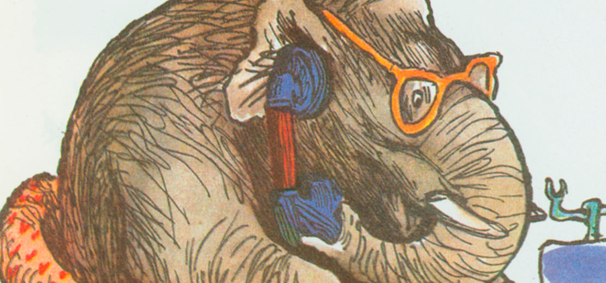

Горький и детская литература
Независимая газета / 1964 год
Отрывки из воспоминаний
У самого преддверья рспешно. Медакции "Летопись" (на Петроградской стороне, в Петрограде) расшалились какие-то дети, - кажется, дети швейцара. Мать звала их спать, но безуимо проходил сутулый Горький - в барашковой шапке, насупленный, с огромным портфелем и, вытирая мерзлые усы, сказал, наставительным голосом:
Даже кит
Ночью спит!
И прошел, не останавливаясь, дальше. Это продолжалось секунду. Но, когда в ту секунду он глядел на детей, вся его хмурость исчезла, и я увидел нежную синеву его глаз.
***
Через несколько дней две девочки, Капа и Ляля, сообщили мне, что сейчас у их папы был Горький и сказал им такие стишки:
Лягушку,
Животное
Болотное,
Склизкое,
Тиская,
Получаем
Ощущенье
Отвращенья.
Подобным экспромтам, как я убедился впоследствии, Горький не придавал ни малейшей цены. Но стоило ему очутиться среди малышей, он до такой степени проникался их безоглядной веселостью, что всякие "пустоговорки" сыпались из него сами собой.
Нужно издать в "Парусе" двести-триста книг, - никак не меньше, самых лучших, какие только существуют на нашей планете!
***
Той же зимой мы встретились с ним в вагоне финляндской железной дороги (по пути в Куоккалу к Репину), и он после первых же слов предложил мне составить для издательства "Парус", которым он тогда руководил, ряд художественных альманахов для детей.
- Детскую литературу, - говорил он, - у нас делают ханжи и прохвосты, это факт. Ханжи и прохвосты. И разные перезрелые барыни. Вот вы все ругаете Чарскую, Клавдию Лукашевич, "Путеводные огоньки", "Светлячки", но ругательствами делу не поможешь. Мы должны противопоставить этой дряни нечто свое, великолепное, творческое...
И опять засияла синева его глаз.
Вообще у него на лице было два основных выражения: либо угрюмо-враждебное, либо ласковое и даже влюбленное. И одно так быстро переходило в другое, что я долго не мог привыкнуть к этой внезапности.
Тут же в вагоне он рассказал мне свой план: как обновить литературу для детей. Нужно издать в "Парусе" двести-триста книг, - никак не меньше, самых лучших, какие только существуют на нашей планете, - и сказки, и стихи, и научно-популярные книги, и исторические романы, и Жюля Верна, и Твена, - словом, все, что в настоящее время издает Детиздат. В ту пору - в 1916 году - эта программа казалась несбыточной...
- И рисунки в детских книгах должны быть высочайшего качества - не каракули каких-нибудь Табуриных, а Репин, Добужинский, Замирайло, - лучшие художники страны.
Я слушал его с восхищением. Сбывалось то, о чем я издавна мечтал. Наконец-то детская литература будет вырвана из рук аферистов и пошлых бездарностей!
Но радость моя вскоре омрачилась, так как Горький потребовал, чтобы в ближайшие дни я принял участие в выработке подробной программы издательства, а я чувствовал себя неподготовленным к такому огромному делу, оробел и смутился.
Иллюстрация Конашевича / 1952 г.***
Сам Горький поразил меня непредвиденной своей эрудицией. С завистью увидел я, что он знает не только парадные комнаты детской словесности, но все ее чердаки и подвалы. Знает и Борьку Федорова, и Ишимову, и Желиховскую, и Елачича, и Александра Круглова. Французская литература для детей была столь же досконально известна ему, как и чешская, и американо-английская.
- Нужно, - говорил он, - перевести поскорее такие-то, такие-то и такие-то книги (и улыбался приветливо по адресу этих замечательных книг), а я к стыду своему, даже их заглавий никогда не слыхал, хотя и занимался детской литературой всю жизнь.
***
У Репина в кабинете висела тарелка, на которой он еще в семидесятых годах написал акварельный портрет своего брата Василья.
- Неплохой Иванушка-дурачок,- сказал Горький. - Пригодится для нашего альманаха... для детского... Попросите Илью Ефимова, чтобы позволил снять с него копию.
- Но кто напишет текст к этой картинке?
- Нужно взять народную сказку из такого-то и такого-то сборника, лучше всего вот такой вариант.
Тут он снова поразил меня ученостью - на этот раз по части фольклора.
- А вот какую сказку об Иванушке слыхал я от бабки, - сказал он в поезде на обратном пути.
И не глядя ни на кого, даже словно конфузясь, стал рассказывать нам волшебную сказку о глупом Иванушке, который жил работником у медведя Михайла Потапыча и...
Но тут в вагон вошло слишком много людей, которые, увидев его, стали назойливо вслушиваться, и он замолчал.
***
Через несколько дней Горький записал эту сказку, и она появилась в нашем сборнике "Елка", - причем в качестве иллюстрации к ней тут же был напечатан "Иванушка" Репина.
Много вынес я мук с этой проклятой тарелкой. Репин дал ее мне на неделю, а типография продержала месяца три и, в конце концов, чуть не разбила. В тогдашних письмах Репина ко мне он неоднократно спрашивал: "Где же тарелка?".
Было бы очень неплохо, если бы Детиздат напечатал эту сказку отдельной книжкой, воспроизведя на обложке того же "Иванушку" Репина.
***
В подзаголовке сборника "Елка" сказано, что она составлена мною под общей редакцией Горького. Таких сборников предполагалось двенадцать, а вышел только один, да и то с запозданием, так как через несколько месяцев началась революция, и людям было не до детских сказок. Именно поэтому нашу "Елку" никто не заметил, - и теперь даже специалисты-детоведы не знают ее.
Между тем в истории детской словесности она является знаменательной вехой. Именно этим сборником Горький начал ту борьбу за высокое качество книг для детей, которую он вел столько лет до последних дней своей жизни. Принципы, провозглашенные им в то дореволюционное время, могли получить осуществление только в нашу эпоху - да и то лишь теперь, когда детская литература очутилась в руках Комсомола.
Для меня лично работа под руководством Алексея Максимовича была школой, университетом. К каждому заседанию приходилось готовиться, словно к экзамену: прочитывать груды книг, чтобы внести хоть несколько имен и заглавий в ту широкую и емкую программу, которая была намечена им.